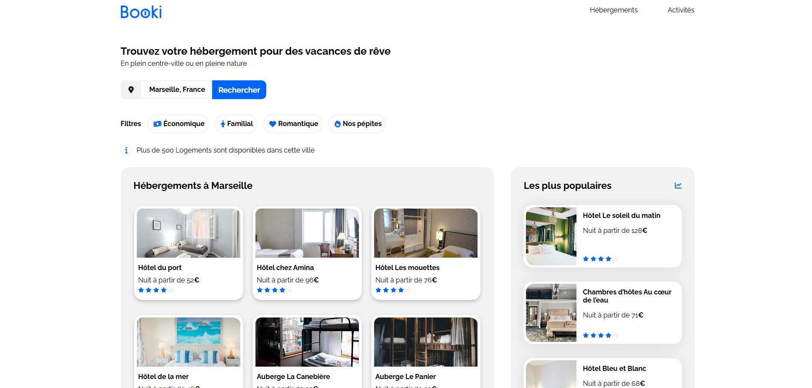
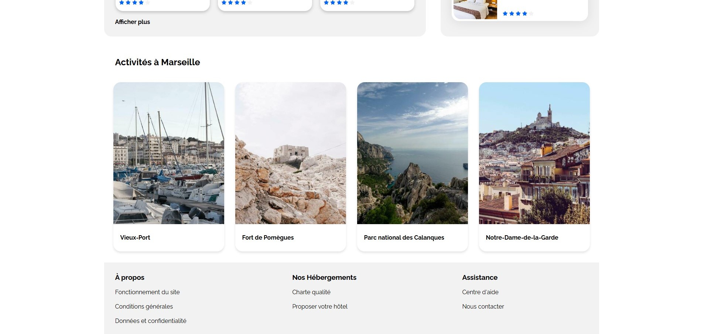

Fonctionnalités et conception :
◎Intégration de la page principale via des maquettes.
◎Mise en place d'une barre de recherche et d'un système de localisation.
◎Ajout de filtres de recherche.
◎Conception des différentes cartes proposant des activités et des logements.
◎Utilisation de Flexbox pour la mise en page.
◎Optimisation du site pour divers supports : grand écran, écran standard, tablette et mobile.
Technologies utilisées :
◎HTML5
◎CSS3
◎Flexbox


×